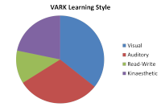
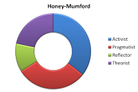
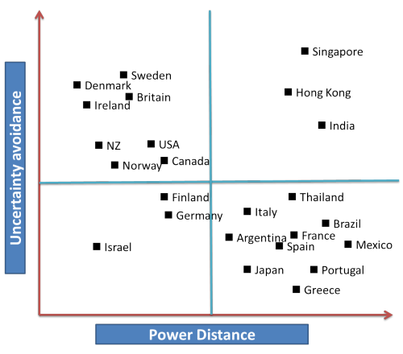
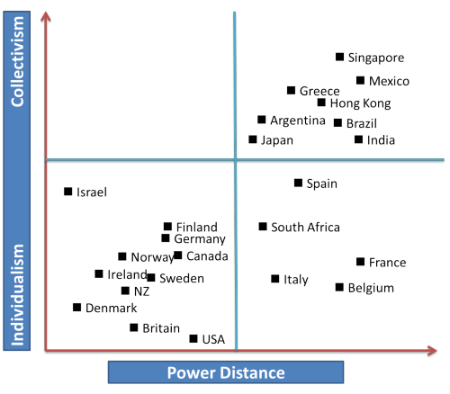

Learning styles and culture
The graphic is intended to represent the fact that we all exhibit a
mixture of learning styles. We are, in other words, a blend, not a
one-dimensional type.
Your antennae should be tuned to
statements such as
She is a visual learner
or
I am a
reflector.
Statements such as these are misleading and can
negatively impact how we see ourselves and our learners. This may
lead to lessons and courses being designed on false premises.
 |
Warning! |
This field in its entirety is not without its stern critics and detractors. A major survey of learning styles theories concluded that:
none of the most popular learning style
theories had been adequately validated through independent research. ...
the value of matching teaching and learning styles were all "highly
questionable".
(The Guardian 2005)
Others have noted that:
the whole concept of learning styles is simply
too vague to be of any theoretical or practical value whatsoever
Sharp, Bowker and Byrne (2008:298)
Go to more on criticisms at the end.
A little history |
Learning-style research originated in the 1970s and has become quite an industry. Considerations of learning style are now routinely incorporated into all education fields and ours is no exception. The problem, of course is twofold:
- There are many ways to classify learning style and a range of procedures (mostly questionnaires but including some quite innovative and imaginative tests) used to discover them in people.
- There is almost no solid empirical evidence to support any of the theories. Most appear intuitively sound but that's not evidence.
Given the wide range of possible learning-style classifications (at least 70), it is not possible here to cover them all. This guide will focus on five:
- Howard Gardner's multiple intelligence theory
- Visual-Auditory-Kinaesthetic learning styles inventory. This is usually abbreviated to VAK or VAKT (Visual-Auditory-Kinaesthetic-Tactile) or VARK (Visual, Aural, Read/Write and Kinaesthetic)
- Neuro Linguistic Programming which is closely associated with VARK
- Mumford-Honey (based on Kolb)
- Field Independence / Field Dependence
 |
Multiple-intelligence theoryHoward Gardner originally posited 7 types of intelligence (and has since suggested some more). He is quite clear that if another researcher were to look at the same data, he/she might identify a rather different set of intelligences. His original list is:
|
Gardner's Multiple Intelligence Theory is, first and foremost, a
theory of the mind rather than a learning-style theory. Many
feel that it has a little more academic credibility than some of the
other theories discussed on this page.
The theory is one of many that see the mind running a set of
specific 'programs' to deal with specific issues (the usual analogy is
to a Swiss-army penknife). It is in
opposition to theories of the mind that see intelligence as a single,
all-purpose learning program.
Gardner also stresses the fact that the intelligences are not
independently used but function in concert:
in the normal course of events, the
intelligences actually interact with, and build upon, one another
(Gardner, 1983: 279)
In a bit more detail, these various intelligences can be described as
follows (based on data at https://www.businessballs.com/self-awareness/howard-gardner-s-multiple-intelligences/).
| intelligence type | description | typical roles | related tasks, activities or tests | preferred learning style clues |
| Linguistic | words and language, written and spoken; retention, interpretation and explanation of ideas and information via language, understands relationship between communication and meaning | writers, lawyers, journalists, trainers, English teachers, poets, editors, linguists, translators, PR consultants, TV and radio presenters | write a set of instructions; speak on a subject; edit a written piece or work; write a speech; commentate on an event; apply positive or negative 'spin' to a story | words and language |
| Logical-Mathematical | logical thinking, detecting patterns, scientific reasoning and deduction; analyse problems, perform mathematical calculations, understands relationship between cause and effect towards a tangible outcome or result | scientists, engineers, computer experts, accountants, statisticians, researchers, analysts, bankers, bookmakers, insurance brokers, negotiators | perform mental arithmetic; create a process to measure something; analyse how a machine works; create a process; assess the value of a business or a proposition | numbers and logic |
| Musical | musical ability, awareness, appreciation and use of sound; recognition of tonal and rhythmic patterns, understands relationship between sound and feeling | musicians, singers, composers, DJ's, music producers, piano tuners, acoustic engineers | perform a musical piece; sing a song; review a musical work; coach someone to play a musical instrument | music, sounds, rhythm |
| Bodily-Kinaesthetic | body movement control, manual dexterity, physical agility and balance; eye and body coordination | dancers, actors, athletes, sports-people, soldiers, fire-fighters, osteopaths, fishermen, drivers, crafts-people, gardeners, chefs | juggle; demonstrate a sports technique; create a mime to explain something; toss a pancake; fly a kite; coach workplace posture | physical experience and movement, touch and feel |
| Spatial-Visual | visual and spatial perception; interpretation and creation of visual images; pictorial imagination and expression; understands relationship between images and meanings, and between space and effect | artists, designers, cartoonists, architects, photographers, sculptors, town-planners, inventors, engineers, beauty consultants | design a costume; interpret a painting; create a room layout; create a corporate logo; design a building; pack a suitcase | pictures, shapes, images, 3D space |
| Interpersonal | perception of other people's feelings; ability to relate to others; interpretation of behaviour and communications; understands the relationships between people and their situations, including other people | therapists, HR professionals, counsellors, politicians, educators, sales-people, clergy, psychologists, teachers, doctors, carers, advertising professionals, coaches and mentors | interpret moods from facial expressions; demonstrate feelings through body language; affect the feelings of others in a planned way; coach or counsel another person | human contact, communications, cooperation, teamwork |
| Intrapersonal | self-awareness, personal cognisance, personal objectivity, the capability to understand oneself, one's relationship to others and the world, and one's own need for, and reaction to change | arguably anyone who is self-aware and involved in the process of changing personal thoughts, beliefs and behaviour in relation to their situation, other people, their purpose and aims | consider and decide one's own aims and personal changes required to achieve them | self-reflection, self-discovery |
You can quickly get an impression of your own mixture by looking down
the column headed related tasks, activities or tests
and deciding which of these sorts of activities you are good at.
It may even be the topic for a lesson which could tell you a good deal
about the people you are teaching.
It may be possible that your learners' professions can tell you
something about them in terms of multiple intelligences. It is equally
possible that they won't.
You can access a multiple-intelligence test in Microsoft Excel format at
http://www.businessballs.com/freematerialsinexcel/free_multiple_intelligences_test.xls
Implications
Think for a moment about the implications for language learning and teaching which flow from the 7 types of intelligence and then click here for some comments.
Again, it should be emphasised that the theory is that we have mixes of these intelligences in various proportions. Nobody has only one of them and we all have some element of all of them. They also work together in concert (see above).
- Clearly, people with high levels of linguistic intelligence should make better language learners and teachers.
- People with high levels of logical-mathematical intelligence will deal more easily with deductive modes of learning.
- People with high levels of musical intelligence should, in theory, have better pronunciation, intonation and rhythm.
- People with good bodily-kinaesthetic intelligence will respond to teaching approaches (such as TPR) which cater to them.
- High levels of spatial-visual intelligence should produce people open to learning and associating language with visual stimuli.
- People with good interpersonal intelligence will be very susceptible to learning via a task-based, cooperative approach.
- All of us need intrapersonal intelligence not least to be able to introspect and develop as learners or teachers.
|  |
VARKThere are four variables
|
The VARK model is an adapted version of the original VAK and
is copyrighted by Neil Fleming (so don't expect a free version on this
site).
An on-line questionnaire to determine your mix of preferred learning
styles is available on the
VARK homepage
which will
also lead you to much more about VARK.
Briefly, the theory is as follows:
- Visual learners
- learn best by seeing things. They take in visual information more effectively than other forms of information so they respond well to visual aids, charts, diagrams and so on.
- Auditory learners
- take in information through their ears and respond well to lectures, discussion, recorded material and so on.
- Reading-writing learners
- will respond well to written exercises and presentations and to procedures which reinforce the language through getting them to write.
- Kinaesthetic learners
- will respond well to activities and procedures which allow them to manipulate objects (such as Cuisenaire rods and cut-ups of texts or physical-object matching exercises such as matching a word to a visual image printed on cards).
Again, don't be tempted to pigeon-hole your learners, or yourself. We all demonstrate mixtures of these preferred learning styles – it is the proportions in the mix that matter. Or so the theory goes.
Implications
Think for a moment about the implications for language learning and teaching which flow from the VARK learning styles and then click here for some comments.
- The most obvious one is that we should cater for all four learning styles in our planning of teaching. This means making sure we have a range of activity types to suit all the styles so that all our learners get the kind of input to which they best respond.
- A secondary consideration is to make sure that we don't fall into the trap of thinking that something is easy to grasp for us with our particular learning-style mix. People with different mixes will not always agree or respond well.
 |
Neuro Linguistic programming (NLP)We should not pass on from VARK without considering its origins and they lie in theories propounded mostly in the 1970s by two psychotherapists, Richard Bandler and John Grinder in California. |
| the map is not the territory |
NLP bases its assumptions on what is known as people's primary
representation systems which are determined by the individual's
reliance on sensory data: visual, kinaesthetic, auditory, olfactory
and even gustatory.
Claims made for NLP range from the effective treatment of
psychological disorders to more outlandish assertions that the
practice can cure nearsightedness, dyslexia, cancer and the common
cold.
NLP theory is mired in controversy, obscure terminology and distortion but certain characteristics can be discerned.
- Subjectivity
People create a map of reality personal to themselves through what they perceive with their senses. This representational system determines their behaviour and that behaviour can be altered and manipulated by a trained programmer. That is what is meant above by saying the map is not the territory: all our representations are subjective understandings of reality. - Consciousness
is seen as split in to what we are aware of and what we are not aware of (the conscious and the unconscious mind). - Learning
can be achieved by gaining rapport (through mirroring non-verbal behaviour) and by requiring imitation of other people's behaviour.
A central concern of NLP from its inception is that of analysing
eye movements with for example, the following suggested:
upward eye movements indicate visual thinking
side-to-side movements indicate auditory thinking
downwards movements indicate kinaesthetic thinking
In terms of language teaching, the following procedures have been recommended (Dahn, n.d.):
- creating rapport through mingling and communication gap activities
- mirroring the behaviour of those we wish to influence or manipulate such as people seen on TV, the teacher and each other
- creating positive states and anchoring by story telling, guided fantasy exercises and so no.
- maintaining flow though balancing activity types and skills work so that learners feel in control of their own learning
- pacing and leading through initially accepting the views of others (pacing) before suggesting alternatives to move people on (leading).
- perceptual positioning by presenting alternative points of view.
- modelling good practice involving learner training and the acquisition of new study skills
There's a good deal more in the same vein to be had by investigating what is claimed for NLP by various proponents on the web and elsewhere.
 |
The evidence |
Unfortunately for proponents of NLP, what evidence there is for
its usefulness or theoretical credibility is almost wholly negative
or neutral. Some proponents of the hypothesis are actively
disparaging of any attempt to investigate the claims scientifically,
averring that it is an art not a science and so beyond the reach of
serious empirical research.
Notwithstanding that claim, many researchers over the decades have
attempted to measure the effectiveness of NLP in particular and
claims about learning styles in general.
The general consensus, not unchallenged, is that NLP is
pseudo-science and has no theoretical credibility and no evidence to
support it. NLP has been variously described as a
quasi-religion, psycho-shamanism and a new-age psycho-religion.
That does not, of course, prevent people from trying to introduce it
into language classrooms for, as Dahn, op cit., points out:
... what is clear is that NLP and ELT are complementary in that NLP learns by observing communication patterns, and ELT learns from what NLP suggests as best practice in improving interpersonal communication and therefore learning. There is nothing in NLP that is contrary to current ELT methodology in terms of communicative language learning and humanistic approaches, while NLP has much to contribute to the already vast repertoire of the informed eclectic.
which implies that because NLP is not actively opposed to the current methodological paradigm, we may as well use it because it might do some good. Many find that sort of argumentation inadequately illuminating.
Witowski, 2010, having undertaken a comprehensive review of the evidence from 63 studies (the reading of which, in his words, 'left me close to tears') concluded his study with:
Today, after 35 years of research devoted to the concept, NLP reminds one more of an unstable house built on the sand rather than an edifice founded on the empirical rock.
Others have been more trenchant:
VAK’s theoretical framework, as far as we can
establish, often lies entangled within neurolinguistic programming,
accelerated learning and brain-based learning, sometimes all three
at once, all highly controversial fields at times strongly
challenged by the mainstream academic and scientific communities.
VAK, as it appears to us, is, in many instances, shrouded in
pseudoscience, psychobabble and neurononsense. VAK’s
instrumentation, as far we have encountered it, is seriously flawed,
never establishing any sense of validity or reliability. As such, it
can lay no claim to any diagnostic, predictive or pedagogical power
whatsoever.
Sharp, Bowker and Byrne, 2008
In other words, there's nothing in it.
|  |
Mumford-Honey (based on Kolb)According to this theory, people are divided into four distinct types, although, to repeat we all have a mix of styles – it is the proportions which vary. The styles are:
|
The questionnaire to identify the various traits is quite long and
cumbersome to administer.
The full 80-item questionnaire in Word format with accompanying
notes is available from
http://erinevadoppijad.weebly.com/uploads/1/9/8/8/19882419/learning-styles-questionnaire-honey-and-mumford11.doc
- Activists
- are flexible and willing to try new ideas and challenges (in
fact, they expect them). They tend to be very involved
and concerned with the present and will try anything once.
They are willing to take risks with language.
However, they also often fail to consider the consequences of their actions (and that makes them poor monitors of their own production). They are usually highly sociable but may want to be the centre of attention.
Such learners also share many of the characteristics of predominately visual learners (see VARK, above). - Pragmatists
- are down-to-earth problem solvers. They want to try things
out to see if they work in practice and are open to applying
language learnt immediately in the real world. They are not
particularly interested in 'theory' so will be resistant to studying
grammar rules etc.
They can become impatient with discussion and want to get on with things now so a task which requires careful planning can prove challenging
They learn most readily by doing things so a task-based approach appeals to them despite their tendency to jump in without thinking things through. - Reflectors
- like to stand back to think about things. They like to
consider their options, gather data and look at things from
different angles before acting. They are fundamentally
cautious and unlikely to respond to situations in which they are
required to take risks with language they have not thoroughly
learned.
In group work, they will often take a back seat and do more listening and thinking than contributing.
They also share characteristics with dominantly reading-writing learners (see VARK, above). - Theorists
- try to integrate what they see into theories. They are thus open
to inductive learning approaches which require them to draw
inferences from examples of the language.
They are sometimes seen as perfectionists and won't be happy until everything fits into an overall scheme that makes sense to them.
They are keen to acquire rules and systems so respond well to grammar work.
Implications
Think for a moment about the implications for language learning and teaching which flow from the 4 types of learners and then click here for some comments.
These are much the same as for the VARK approach.
- Firstly, we should cater for all four types of learners in our planning. This means making sure we have a range of activity types to suit all the styles so that all our learners get the kind of input and activity to which they best respond.
- A secondary consideration is to make sure that we don't fall into the trap of thinking that something which is an attractive procedure and task type for us will also appeal to all our students. Language teachers tend to be activists and pragmatists but our learners do not always follow that pattern.
- A third consideration concerns how we should constitute groups for tasks. It may be helpful to have a mix of approaches for some tasks but fatal to mix, say, predominately pragmatists and reflectors for others because their approaches will be very different and they are likely to lose patience with each other. You have probably seen it happen if you have tried to implement a task-based approach.
Field (in)dependenceThe distinction between field dependent and field independent learners is based on work done by Witkin et al starting in the 1940s. |
Briefly:
Field dependent people are strongly influenced by the
surroundings of what they perceive.
Field independent people perceive things as discrete entities
and are uninfluenced by the background.
The tests for field (in)dependence involve the ability to locate
embedded shapes in an overall design. This is the GEFT (Group
Embedded Figures Test). Performance in the test measures the level
of field independency. The argument runs that:
- field independent learners will
- be better at formal language-learning tasks
better at discrete-point tests
use deductive approaches to learning
rely on an internal frame of reference rather than other people so are better at self-assessment
attend to detail
enjoy drills - field dependent learners will
- be better at picking up language informally
be more receptive to communicative, social tasks
use inductive learning approaches
be better at things like cloze tests and other gap-fill tests
enjoy task-based learning activities
Implications
These are reasonably obvious, the major one being that we need to mix up the sorts of activities, procedures and test types we use to be fair to all our learners.
Problems with the theory
A number of criticisms have been made of the theory as far as second-language acquisition is concerned.
- There is no measure of field independence – the GEFT test only measures one aspect, field dependence.
- The GEFT test is actually a measure of cognitive ability, not a learning style at all.
- GEFT test outcomes appear to be culturally influenced with people from urban societies which have free social structures and are more individualistic scoring as field independent and people from collectivist societies with rigid social structures scoring more as field dependent. Children, too, seem to be more field dependent than adults, as do people in people-oriented work as opposed to object-oriented jobs.
- A number of studies have failed to find any correlation at all between GEFT scores and language learning success or preferences.
- One paper on the area concluded that the FI/FD distinction is
a wasteland bereft of
meaningful hypotheses for L2 researchers
(Griffiths
and Sheen, cited in Ellis (1994: 506)).
 |
Criticisms of learning-style theories |
You may, of course, like to dismiss all the classifications of assumed learning styles as just so much California psycho-babble. There is evidence for that and all hypotheses have been attacked as pseudo-science or just plain wrong.
- Neuroscientists, in particular those working in the field of evolutionary neuroscience, have branded hypotheses about various learning styles as 'nonsense'. One central concern of scientists working in these fields is to identify how, through a process of natural selection, the mind's various abilities (to learn language, to recognise faces, identify kin, care for children etc.) evolved and what these abilities are now co-opted for in a world very different from the pre-historic hunter-gathering societies in which they evolved. See Barkow, Cosmides and Tooby, 1992, for much more on this.
- A major survey of a large number of learning-style theories was
carried out in 2004 by academics at the University of Newcastle.
Their conclusions were, in brief, that there is no reliable
empirical and independent evidence to support this kind of
classification of individuals. They found that none of the
most popular learning style theories had been adequately validated
through independent research.
- The idea of a learning cycle, the
consistency of visual, auditory and kinaesthetic preferences, and
the value of matching teaching and learning styles were all "highly
questionable".
(In the Guardian, 2005) - They noted,
too, that
fortunes are being made as instruments, manuals, videotapes, in-service packages, overhead transparencies, publications and workshops are all commercially advertised and promoted vigorously by some of the leading figures in the field. In short, the financial incentives are more likely to encourage further proliferation than sensible integration.
(Coffield et al, 2004:145) - The language of learning styles
has saturated the personalised learning agenda," says Guy Claxton,
professor of education at Bristol University. "That they [the DfES, the British Education
Ministry] should recommend the theory so uncritically is, frankly,
incredible."
(The Guardian, op cit.) - The Demos report said evidence for
learning styles was "highly variable", and that various exponents
were "not by any means frank about the evidence for their work".
The team was alarmed by the use some schools made of learning
styles: "Some teachers, despite their best intentions, are using
learning styles in ways that constitute poor professional practice."
(The Guardian, op cit.)
Demos is, in its own words, 'Britain's leading cross-party think-tank' (https://www.demos.co.uk)
- The idea of a learning cycle, the
consistency of visual, auditory and kinaesthetic preferences, and
the value of matching teaching and learning styles were all "highly
questionable".
- Howard Gardner is also unhappy about the way his multiple
intelligences theory is sometimes used:
The Harvard professor never intended his book on multiple intelligences (MI) to be a blueprint for learning, but he was aware that many educationalists were adapting his ideas. The shock came on a visit to Australia.
"I learned that an entire state had adapted an education programme based in part on MI theory," he says. "The more I learned about this programme, the less comfortable I was. Much of it was a mishmash of practices – left brain and right brain contrasts, sensory learning styles, neurolinguistic programming and multiple intelligences approaches, all mixed with dazzling promiscuity."
(ibid.) - In Britain, learning-style theory is supported by the state agencies
and that has led to some schools labelling children
(physically, with a badge) to show their preferred learning styles. Many people are uneasy about that
including Sharp, Bowker and Byrne (op cit.) who suggest:
The labelling of children in schools as visual, auditory or kinaesthetic learners is not only unforgivable, it is potentially damaging, though the various authors associated with VAK are not to be blamed for how VAK has been taken and applied. Any evidence that VAK ‘works’, be it with instrumentation, activities or strategies, is, at the present time, entirely anecdotal.
There is an article arguing against the use of learning-style theory on this site (linked below).
Culture |
No consideration of learning styles is complete without some
attention to cultural issues. In fact, given the above
criticisms, this may be a more fruitful way of looking at learning
style.
In this we must be careful to avoid crude cultural stereotyping
along the lines of "All English people are reserved and
cold-blooded.", of course, but some approaches to learning and
studying are obviously culturally produced.
A major body of work in this area has been done by Geert and Gert
Jan Hofstede and a good deal of information is available on their
website at http://www.geerthofstede.nl.
For our purposes, the most obviously useful data concerns the
relationships across various cultures between two sets of two variables:
Power
distance and Uncertainty avoidance
on the one hand and Collectivism vs.
Individualism on the other.
Power distance refers to the amount of authority some people in
society have and the concomitant amount of deference they are shown.
Uncertainty avoidance refers to people's willingness to take risks
and tolerate ambiguity.
Collectivism and
Individualism concern how much
people are prepared or inclined (or not) to subordinate the
individual to the society.
Here's a table of the relationship between Uncertainty Avoidance and Power distance for some major cultures rather freely adapted from the Hofstede site.

Note, for example, that Britain, Denmark, Sweden and Ireland
exhibit small power distances and weak uncertainty avoidance.
You would anticipate that learners from these cultures will expect a
large measure of equality between students and teachers and be
willing to take risks.
At the other end of the spectrum (bottom right) lie cultures such as
Japan, Portugal and Greece which have both large power distances and
low tolerance of uncertainty. We should expect learners from
these backgrounds to be unwilling to take risks in the classroom and
expect the teacher to be very much in charge and fronting the
learning process. They may even become anxious if they find
that they are expected to experiment with language and work in pairs
or groups without the supervision of the teacher.
Here's another considering the second pair of characteristics.

Note, for example, that individualistic societies often
exhibit small power distances and that collectivist societies
usually show large power distances.
This may well affect many facets of classroom dynamics, the way
tasks are approached and much else, potentially.
Learners from the cultures in the top-right of the grid may prefer
to work together on issues, sublimating their individual views to
those of the majority and working on a group outcome to which they
will all adhere. They will, however, expect the teacher to
lead the task and to do the evaluation of its success.
Learners from cultures in the bottom left of the grid may become
frustrated with a group approach and prefer to reach their own
conclusions. They may feel in the best position to judge how
successful they have been and may not rely on or agree with the
teacher's views.
Those from cultures in the bottom right of the grid will be happy to
work alone but may depend on the teacher for evaluation, task
setting and assessment.
For more on cultural issues, try the two articles on this site, linked below
| Related guides (some only marginally related) | |
| an article arguing against | for the article arguing the other side of the issue (new tab) |
| power distance and uncertainty avoidance | for an article about these aspects of culture (new tab) |
| collectivism vs. individualism | for an article about these aspects of culture (new tab) |
| first- and second-language acquisition | theories about how we learn our first language and how they may apply to SLA |
| Bloom's taxonomy | this takes a severely cognitive view of learning and attempts to rate cognitive challenge on a six-point scale |
| needs analyses | for an area in which learning styles are often investigated |
| language and thought | for a guide to how and whether these are related and which way the causality works |
| unlocking learning | this is a guide in the Delta section which considers four theories and their classroom implications for learning |
References:
As cited above in the text for website tests and questionnaires etc.
Plus:
Barkow, JH, Cosmides, L & Tooby, J (Eds.), 1992, The Adapted Mind,
New York: Oxford University Press
Coffield, F, Moseley, D, Hall, E, Ecclestone, K, 2004, Learning
styles and pedagogy in post-16 learning. A systematic and critical
review, London: Learning and Skills Research Centre. Available
from: https://www.voced.edu.au/content/ngv%3A13692 [accessed September
2020]
Dahn, S, n.d., Neuro Linguistic Programming in ELT, British Council
available at:
https://www.teachingenglish.org.uk/article/neuro-linguistic-programming-elt
Ellis, R, 1994, The Study of Second Language Acquisition,
Oxford: Oxford University Press
Gardner, H, 1983, Frames of Mind: The Theory of Multiple
Intelligences, New York: Basic Books
The Guardian, 2005, Each to his own. available at
https://www.theguardian.com/education/2005/may/31/schools.uk3
[accessed November 2014]
Sharp, JG, Bowker, B and Byrne, J, 2008, VAK or VAK-uous?
Towards the trivialisation of learning and the death of scholarship,
Research Papers in Education, Vol. 23, No. 3, September 2008,
293–314, Routledge Taylor and Francis Group
Witowski, T, 2010, Thirty-Five Years of Research on Neuro-Linguistic
Programming. NLP Research Data Base. State of the Art or
Pseudoscientific Decoration?, Polish Psychological Bulletin,
vol 41 (2), 58-66